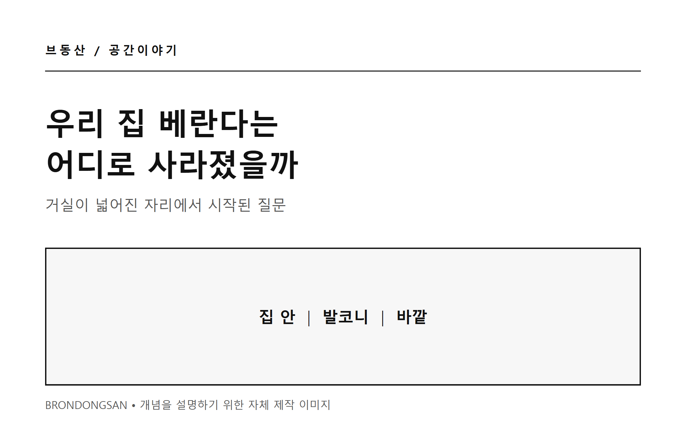
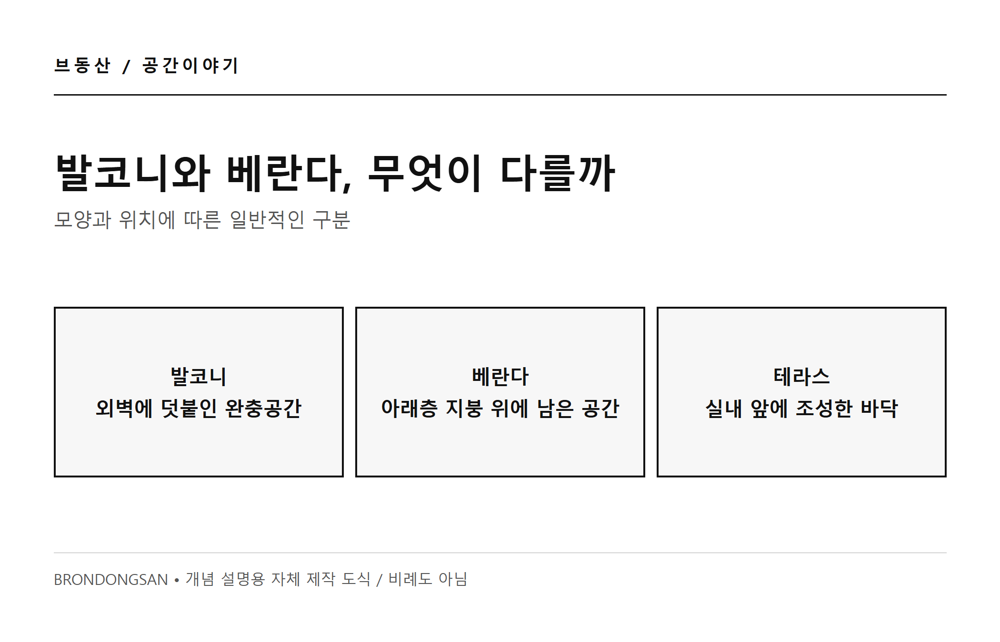
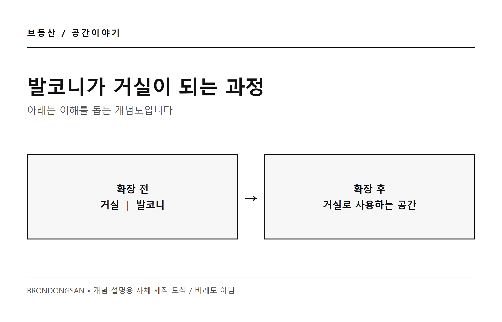
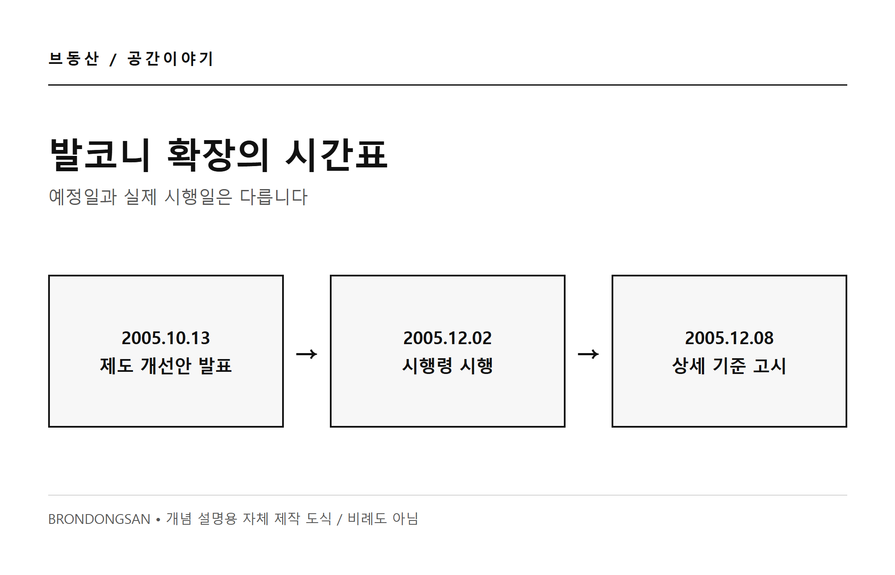
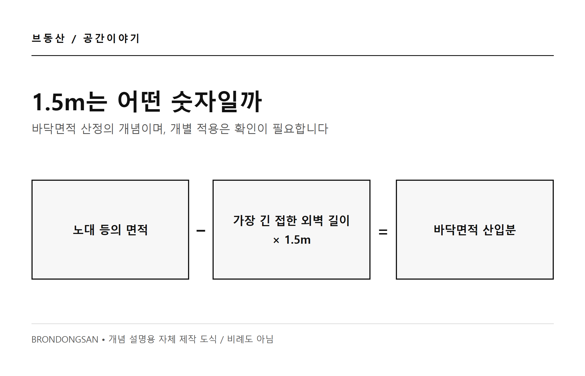
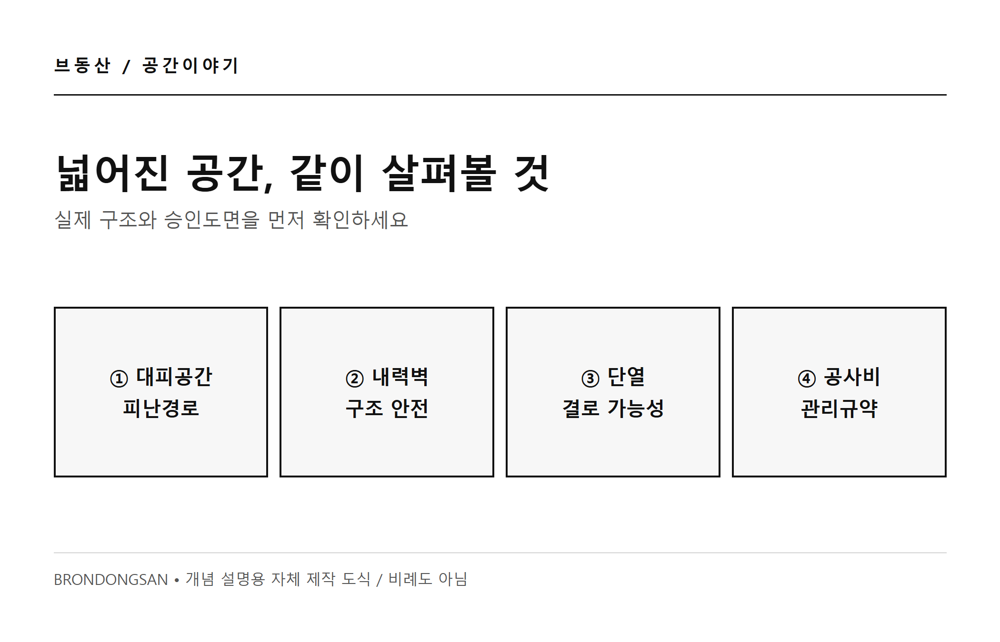

예전 집에는 빨래도 널고 화분도 두던 베란다가 있었다. 요즘 집에서는 그 자리가 거실이 된 것 같다. 우리 집 베란다는 어디로 사라졌을까?
1. 우리 집 베란다는 사실 발코니일지도 모른다
어릴 때는 빨래를 널고 화분을 두던 곳을 다 같이 베란다라고 불렀다. 그런데 아파트 바깥 창 앞에 덧붙은 그 공간은 건축에서 대체로 발코니에 가깝다. 발코니는 외벽에 접해 설치되는, 실내와 바깥 사이의 완충공간이다.
베란다는 보통 위층이 아래층보다 작아 아래층 지붕이 위층 바깥 공간으로 남은 곳을 말한다. 테라스는 실내에서 밖으로 나가 쓸 수 있도록 조성한 바닥 공간이다. 말이 혼용될 수 있지만 구조와 법적 판단은 실제 도면과 형태를 봐야 한다.

2. 발코니는 왜 거실이 되었을까
예전 아파트의 발코니에는 빨래와 장독대, 자전거와 화분처럼 집 안에 두기 애매한 물건이 모였다. 바깥 공기와 실내 사이에서 생활의 여유를 받아주던 공간이었다. 모든 집이 같은 방식으로 사용한 것은 아니지만, 이런 풍경은 많은 사람에게 익숙하다.
한편 더 넓은 방과 거실을 원하는 수요도 있었다. 2005년 정부는 당시 아파트 입주민의 40% 이상이 발코니를 구조변경해 사용하고 있다고 발표했다. 이 숫자는 당시 정부의 설명일 뿐 현재의 확장률을 뜻하지 않는다.
확장을 하면 발코니와 방 사이 경계가 달라지고, 그 자리를 거실이나 침실의 일부처럼 사용할 수 있다. 다만 모든 발코니가 사라진 것은 아니다. 세탁실이나 실외기실, 대피공간 등으로 남는 공간은 집마다 다르다.

3. 2005년, 발코니 확장의 규칙이 바뀌었다
정부가 개선안을 발표한 날은 2005년 10월 13일. 실제로 발코니 정의와 주택 발코니의 사용 기준을 신설한 건축법 시행령 개정령은 2005년 12월 2일 공포와 동시에 시행됐다. 상세 구조변경 기준은 같은 해 12월 8일 고시됐다. 당시 기사에 적힌 시행 예정일과 실제 시행일을 구분해야 한다.
시행령은 기준에 맞는 주택의 발코니를 필요에 따라 거실·침실·창고 등으로 사용할 수 있도록 했다. 그렇다고 모든 공간을 마음대로 철거해도 된다는 뜻은 아니다. 대피·방화 및 구조안전과 필요한 절차를 함께 살펴야 한다.

4. ‘서비스 면적 1.5m’는 무슨 뜻일까
발코니 이야기를 하면 서비스 면적과 1.5m가 따라 나온다. 건축법상 바닥면적 산정은 단순히 길이를 자르는 규칙이 아니다. 노대 등의 면적에서 가장 긴 접한 외벽 길이에 1.5m를 곱한 값을 공제하고, 나머지를 바닥면적에 산입하는 산식이 기본이다.
예를 들어 접한 가장 긴 외벽이 6m라면 산식상의 공제값은 9㎡다. 이는 이해를 위한 가상 계산일 뿐, 실제 평면의 법적 인정 면적이나 확장 가능 면적을 보장하지 않는다. 해당 공간의 형태, 적용 시기와 기준을 따로 확인해야 한다.
확장했다고 해서 공부상 전용면적이 자동으로 늘어나는 것도 아니다. 같은 전용면적이라도 발코니 구성과 확장 여부에 따라 체감 공간이 다를 수 있다. “공짜로 몇 평을 얻는다”는 말보다 도면과 계약서의 면적 표기를 살피는 편이 정확하다.

5. 넓어진 거실과 남겨야 할 공간
넓은 실내는 분명 편하다. 반대로 빨래를 말리거나 물건을 임시로 두던 완충공간이 줄어들 수 있고, 외기와 직접 맞닿는 창 주변의 단열·결로 관리가 더 중요해질 수 있다. 어느 쪽이 무조건 좋다고 말하기보다 우리 생활에 어떤 공간이 필요한지 살펴보자.
확장을 검토한다면 먼저 승인도면과 관리사무소 안내를 확인하고, 대피공간·피난경로를 막거나 변경하지 않는지 살펴야 한다. 내력벽이나 구조체는 임의로 철거하지 말고 전문가와 관할 기관에 문의하자. 공사비, 창호 사양, 단열과 결로 대책, 필요한 신고·동의도 함께 확인할 일이다.
베란다가 사라진 게 아니라 우리가 부르던 발코니의 일부가 다른 쓰임을 갖게 된 셈이다. 다음에 평면도를 볼 때는 거실의 크기뿐 아니라, 창문 밖과 방 사이에 어떤 여백이 남아 있는지도 한 번 살펴보면 어떨까.

참고한 자료
서울도시계획포털 · 발코니·베란다·테라스 ↗ · 국가법령정보센터 · 2005년 12월 2일 시행 건축법 시행령 ↗ · 국토교통부 · 2005년 발코니 구조변경 개선안 ↗ · 국토교통부 · 발코니 구조변경 상세 기준 고시 ↗ · 법제처 생활법령정보 · 발코니 확장공사 ↗